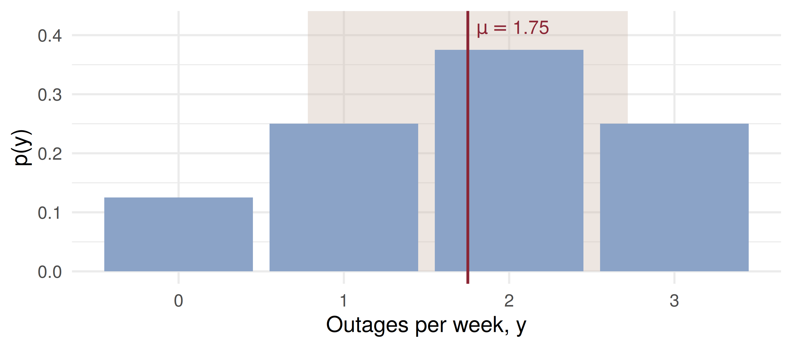

total mu var sd
1.0000 1.7500 0.9375 0.9682 avg var
1.7475 0.9430 Discrete Random Variables and Expected Value
ADA University, School of Business
Information Communication Technologies Agency, Statistics Unit
2026-09-24
By the end of this lecture, you will be able to:
Identify a discrete random variable and write its probability distribution as a formula, a table or a graph
Check that a proposed \(p(y)\) is a valid distribution using Theorem 3.1
Compute \(E(Y)\), \(E[g(Y)]\), \(V(Y)\) and \(\sigma\) for a discrete distribution
Use linearity (Theorems 3.3–3.5) and \(V(Y) = E(Y^2) - \mu^2\) to shorten the arithmetic
Price a premium or compare two projects by their mean and their variance
Last class ended on: Chapter 3 — discrete random variables, their probability distributions, and expected value (§§3.1–3.3).
Chapter 2 gave us a random variable as a real-valued function on a sample space. Today we stop listing sample points and start working with the numbers directly.
The question this lecture answers
A motor insurer sells hail cover. Most policies never claim; a few claim a lot. What should one policy cost, and how far can a year’s claims stray from that price?
Definition 3.1
A random variable \(Y\) is said to be discrete if it can assume only a finite or countably infinite number of distinct values.
Discrete random variables are usually counts:
Notation: \(Y\) is the random variable; \(y\) is a particular value it takes. After the hour is over, \(y\) is not random.
Definitions 3.2 and 3.3
\(P(Y = y)\) is the sum of the probabilities of all sample points in \(S\) assigned the value \(y\), written \(p(y)\) — the probability function for \(Y\). The probability distribution of \(Y\) is a formula, a table or a graph giving \(p(y)\) for all \(y\).
Theorem 3.1
For any discrete probability distribution: (1) \(0 \le p(y) \le 1\) for all \(y\); (2) \(\sum_y p(y) = 1\), summed over all \(y\) with nonzero probability.
Any \(y\) not assigned a positive probability has \(p(y) = 0\).
A new index will add 2 of 6 shortlisted Baku-listed companies, chosen at random: 3 are banks, 3 are energy firms. Let \(Y\) = number of banks added.
\(S\) has \(\binom{6}{2} = 15\) equally likely points. Counting the points assigned each value: \[p(y) = \frac{\binom{3}{y}\binom{3}{2-y}}{\binom{6}{2}}, \quad y = 0, 1, 2\]
| \(y\) | 0 | 1 | 2 |
|---|---|---|---|
| \(p(y)\) | \(3/15 = 1/5\) | \(9/15 = 3/5\) | \(3/15 = 1/5\) |
Formula, table — and each \(p(y) \in [0,1]\), summing to 1, as Theorem 3.1 requires.
Definition 3.4
The expected value of \(Y\) is \(\;E(Y) = \sum_y y\,p(y).\) If \(p(y)\) describes the population, \(E(Y) = \mu\).
Definition 3.5
The variance of \(Y\) is \(\;V(Y) = E[(Y - \mu)^2]\). The standard deviation \(\sigma\) is its positive square root.
\(E(Y)\) is a long-run average: run the experiment \(n\) times and about \(n\,p(y)\) results equal \(y\), so the average of the results is close to \(\sum_y y\,p(y)\).
\(Y\) = outages per week on an ISP’s business network in Baku.
| \(y\) | 0 | 1 | 2 | 3 |
|---|---|---|---|---|
| \(p(y)\) | \(1/8\) | \(1/4\) | \(3/8\) | \(1/4\) |
\[\mu = 0\left(\tfrac18\right) + 1\left(\tfrac14\right) + 2\left(\tfrac38\right) + 3\left(\tfrac14\right) = 1.75\]
\[\sigma^2 = (0-1.75)^2\tfrac18 + (1-1.75)^2\tfrac14 + (2-1.75)^2\tfrac38 + (3-1.75)^2\tfrac14 = 0.9375\] \(\sigma = \sqrt{0.9375} = 0.97\). The interval \(\mu \pm \sigma = (0.78, 2.72)\) holds \(y = 1, 2\): probability \(5/8\).
total mu var sd
1.0000 1.7500 0.9375 0.9682 avg var
1.7475 0.9430 
\(\mu\) sits between bars, at a value \(Y\) can never take. The shaded band is \(\mu \pm \sigma\).
Theorem 3.2
\(E[g(Y)] = \sum_{\text{all } y} g(y)\,p(y)\)
The ISP’s contract credits a corporate client 0 AZN for 0 or 1 outages, 500 AZN for 2 and 1,500 AZN for 3. \[E[g(Y)] = 0\left(\tfrac18\right) + 0\left(\tfrac14\right) + 500\left(\tfrac38\right) + 1500\left(\tfrac14\right) = 562.5 \text{ AZN per week}\]
No need to derive the distribution of \(g(Y)\) first. The proof does exactly that grouping — \(P(g = 0) = 3/8\), \(P(g = 500) = 3/8\), \(P(g = 1500) = 1/4\) — and gets the same sum.
Theorems 3.3, 3.4 and 3.5
For a constant \(c\) and functions \(g, g_1, \dots, g_k\) of \(Y\): \[E(c) = c, \qquad E[c\,g(Y)] = c\,E[g(Y)],\] \[E[g_1(Y) + \cdots + g_k(Y)] = E[g_1(Y)] + \cdots + E[g_k(Y)]\]
Each proof is one line: apply Theorem 3.2, then pull the constant or split the sum. \(E(c) = c\) uses \(\sum_y p(y) = 1\) from Theorem 3.1.
Theorem 3.6
\(V(Y) = \sigma^2 = E[(Y - \mu)^2] = E(Y^2) - \mu^2\)
Expand and use 3.3–3.5: \(E(Y^2 - 2\mu Y + \mu^2) = E(Y^2) - 2\mu^2 + \mu^2\).
Example 3.3, ISP outages: \(E(Y^2) = 0 + 1\left(\tfrac14\right) + 4\left(\tfrac38\right) + 9\left(\tfrac14\right) = 4\), so \[\sigma^2 = 4 - 1.75^2 = 0.9375\] Note \(E(Y^2) = 4 \ne \mu^2 = 3.0625\): the mean of a function is not the function of the mean.
A Baku transfer office charges 1 AZN plus 2% of the amount. With \(Y\) = amount in hundreds of AZN, the fee is \(F = 2Y + 1\).
| \(y\) | 1 | 2 | 3 | 5 |
|---|---|---|---|---|
| \(p(y)\) | 0.4 | 0.3 | 0.2 | 0.1 |
\(E(Y) = 2.1\), \(E(Y^2) = 5.9\), so \(V(Y) = 5.9 - 2.1^2 = 1.49\).
From Theorems 3.3–3.6: \(E(aY + b) = a\mu + b\) and \(V(aY + b) = a^2\sigma^2\). \[E(F) = 2(2.1) + 1 = 5.2 \text{ AZN}, \qquad V(F) = 4(1.49) = 5.96, \quad \sigma_F = 2.44 \text{ AZN}\] The fixed 1 AZN moves the mean and leaves the spread alone.
One car’s hail claim \(X\) in a season: 0 (prob. 0.95), 2,000 AZN (0.04), 8,000 AZN (0.01). Admin costs 40 AZN per policy; the insurer targets an expected profit of 60 AZN. What premium \(C\)?
\(E(X) = 2000(0.04) + 8000(0.01) = 160\) AZN. Profit is \(C - 40 - X\), so by linearity \[E(\text{profit}) = C - 40 - 160 = 60 \;\Rightarrow\; C = 260 \text{ AZN}\]
\(E(X^2) = 0.04(2000^2) + 0.01(8000^2) = 800{,}000\), so \(\sigma_X = \sqrt{800{,}000 - 160^2} = 880\) AZN — more than three premiums. One policy is a gamble; the business is in pooling many.
A logistics firm runs a van \(t\) hours a day. Daily breakdowns \(Y_A\) have mean and variance \(0.10t\); \(Y_B\) has \(0.12t\). Daily cost (AZN): \(C_A = 10t + 30Y_A^2\), \(C_B = 8t + 30Y_B^2\).
The key step is Theorem 3.6 read backwards, \(E(Y^2) = V(Y) + \mu^2\): \[E(C_A) = 10t + 30[0.10t + (0.10t)^2] = 13t + 0.3t^2, \quad E(C_B) = 11.6t + 0.432t^2\]
| \(t\) | \(E(C_A)\) | \(E(C_B)\) | cheaper |
|---|---|---|---|
| 10 h | 160.0 | 159.2 | B |
| 20 h | 380.0 | 404.8 | A |
The two cross at \(t = 1.4/0.132 \approx 10.6\) hours.
A bank can finance one of two projects. NPV in millions of AZN:
| Project | Outcome 1 | Outcome 2 | Outcome 3 |
|---|---|---|---|
| P | \(-1\) (prob. 0.2) | \(2\) (prob. 0.5) | \(4\) (prob. 0.3) |
| Q | \(1\) (prob. 0.25) | \(2\) (prob. 0.5) | \(3\) (prob. 0.25) |
Four minutes, in pairs:
\(E(P) = -0.2 + 1.0 + 1.2 = 2.0\) and \(E(Q) = 0.25 + 1.0 + 0.75 = 2.0\). Same mean.
\(E(P^2) = 0.2 + 2.0 + 4.8 = 7.0\), so \(V(P) = 7.0 - 4 = 3.0\), \(\sigma_P = 1.73\). \(E(Q^2) = 0.25 + 2.0 + 2.25 = 4.5\), so \(V(Q) = 0.5\), \(\sigma_Q = 0.71\).
base = [0.15, 0.35, 0.25, 0.15, 0.05, 0.05]
pmf = base.map((b, y) => ({y: y, p: y === 1 ? b - shift : y === 5 ? b + shift : b}))
mu = d3.sum(pmf, d => d.y * d.p)
ey2 = d3.sum(pmf, d => d.y * d.y * d.p)
v = ey2 - mu * mu
md`Total **${d3.sum(pmf, d => d.p).toFixed(2)}** · mean **μ = ${mu.toFixed(2)}** · variance **σ² = ${v.toFixed(3)}** · σ = ${Math.sqrt(v).toFixed(3)}`Plot.plot({
width: 1150,
height: 300,
marginTop: 40,
marginLeft: 78,
marginBottom: 58,
style: {fontSize: "18px"},
x: {label: "Complaints per hour, y", domain: [0, 1, 2, 3, 4, 5], padding: 0.15},
y: {label: "p(y)", domain: [0, 0.4], ticks: [0, 0.1, 0.2, 0.3, 0.4], tickFormat: ".1f", grid: true},
marks: [
Plot.barY(pmf, {x: "y", y: "p", fill: d => d.y === 1 || d.y === 5 ? "#8b2635" : "#8ba3c7"}),
Plot.text(pmf, {x: "y", y: "p", text: d => d.p.toFixed(2), dy: -14, fontSize: 18}),
Plot.ruleY([0])
]
})Moving 0.30 of mass four steps raises μ by \(4(0.30) = 1.2\) — but nearly doubles σ².
Which of these can be the probability function of complaints per hour, \(y = 0, 1, 2, 3\)?
A small fleet files \(Y\) = 0, 1 or 2 hail claims in a season, with probabilities 0.5, 0.3, 0.2. What is \(E(Y)\)?
\(V(Y) = 4\) for a transfer amount \(Y\). The fee is \(F = 3Y + 5\) AZN. What is \(V(F)\)?
| Statement | |
|---|---|
| Theorem 3.1 | \(0 \le p(y) \le 1\), \(\;\sum_y p(y) = 1\) |
| Definition 3.4 | \(E(Y) = \sum_y y\,p(y)\) |
| Theorem 3.2 | \(E[g(Y)] = \sum_y g(y)\,p(y)\) |
| Definition 3.5 | \(V(Y) = E[(Y - \mu)^2]\), \(\;\sigma = \sqrt{V(Y)}\) |
| Theorems 3.3–3.5 | \(E(c) = c\), \(\;E[cg(Y)] = cE[g(Y)]\), \(\;E\) of a sum is the sum of \(E\) |
| Theorem 3.6 | \(V(Y) = E(Y^2) - \mu^2\) |
| consequence | \(E(aY + b) = a\mu + b\), \(\;V(aY + b) = a^2\sigma^2\) |
A discrete random variable takes countably many values; its distribution is \(p(y)\) as a formula, a table or a graph
Theorem 3.1 is the validity check: every \(p(y)\) in \([0, 1]\), total 1
\(E(Y)\) is a probability-weighted average — a premium is built on it
\(V(Y)\) measures what the mean hides: two projects with the same mean can carry very different risk
Linearity and \(E(Y^2) - \mu^2\) turn most calculations into two sums
Wackerly, 7th edition
Week 5, Problem Set 2 is open now and closes Sunday 18 October at 23:59 on WeBWorK, covering §§3.1–3.3. The TA-led tutorial runs this week.
Quiz I is on 17 October, first 30 minutes of class, on Chapters 1–2 — today’s material is not on it, but it is on Midterm I (24 October).
Next class: §3.4 — the binomial distribution.
Dr. Samir Orujov
📧 sorujov@ada.edu.az
🏢 Building D, Room D325
🕓 Office hours: Wednesday, 16:00 – 18:00
Slides and readings: sorujov.net/teaching
Can \(E(Y)\) be a value that \(Y\) never takes? Can \(V(Y)\) ever be negative?
A premium is set at \(E(X)\) plus costs. Why does an insurer with 50 policies charge more than one with 50,000?
When is \(E[g(Y)] = g(E(Y))\) exactly true?

Mathematical Statistics I - Discrete Random Variables and Expected Value